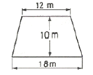
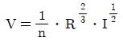
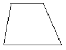
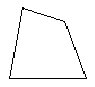
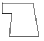
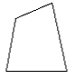

산림산업기사 (2008-05-11 기출문제)
1과목: 조림학
1. 임지에서 석회질 비료 시비효과가 아닌 것은?
- 산성 토양을 중화 시킨다
- 토양의 풍화를 촉진한다.
- 토양의 이화학적 성질을 개량한다
- 미생물의 번식을 촉진한다.
(정답률: 70%)

2. T/R율에 관한 설명으로 틀린 것은?
- 근계발달과 그 종실도를 양적으로 표시하는 방법이다.
- 묘목의 지상부의 무게를 뿌리의 무게로 나눈 값이다.
- T/R율의 값이 클수록 좋은 묘목이다.
- T/R율은 흙의 성분 등 여러 조건에 영향을 받는다.
(정답률: 82%)
3. 알칼리 토양 상태에서 자란 묘목 상부의 새잎에 심한 황화현상(chlorosis)이 일어났다면 다음 중 어떤 영양소의 과부족으로 보는 것이 적합한가?
- 인산의 부족
- 마그네슘의 부족
- 철의 부족
- 질소의 과잉
(정답률: 50%)
4. 풀베기 작업에 대한 설명으로 옳은 것은?
- 음수의 조림지는 모두베기보다 줄베기 또는 둘레 베기가 적합하다.
- 하층식생이 완전히 생장을 멈춘 9월 이후에 실시한다.
- 풀베기 작업은 어느 수종이나 3년간만 실시하는 것이 적합하다.
- 동해에 약한 수종에 대해서는 모두베기를 하여 햇볕을 많이 받도록 한다.
(정답률: 75%)
5. 삽목번식의 장점으로 거리가 먼 것은?
- 살생묘보다 수명이 길다.
- 모수와 동일한 유전자형의 묘목을 얻을 수 있다.
- 한 주로 다수의 묘목을 얻을 수 있다.
- 결실의 주기성에 관계없이 번식시킬수 있다.
(정답률: 58%)
6. 비료목으로 적합한 수종이 아닌 것은?
- 아까시나무
- 상수리나무
- 오리나무
- 싸리나무
(정답률: 92%)
7. 묘포상에서 일반적인 제초제의 사용방법에 해당하지 않는 것은?
- 토양처리법
- 훈증법
- 잡초처리법
- 잡초 및 토양처리법
(정답률: 93%)
8. 묘포 적지의 선정요건과 거리가 먼 것은?
- 토양
- 구매자의 유무
- 교통과 노동력공급
- 피해요소
(정답률: 83%)
9. 산벌작업에서 종자의 결실을 촉진하기 위해서 실시하는 벌채 방법은?
- 예비벌
- 무육벌
- 후벌
- 택벌
(정답률: 40%)
10. 다음 종자의 정선방법 중 도구를 사용하지 않는 것은?
- 풍선법
- 사선법
- 액체선법
- 입선법
(정답률: 69%)
11. 다음 수종 중 생가지치기를 할 경우 가장 위험성이 높은 수종은?
- 단풍나무
- 소나무
- 일본잎갈나무
- 삼나무
(정답률: 84%)
12. 옻나무, 피나무, 주엽나무 등의 종자발아촉진 방법으로 가장 적합한 것은?
- 침수처리
- 노천매장
- 황산처리법
- 파종시기의 변경
(정답률: 59%)
13. 종자의 발아에 후숙을 필요로 하지 않는 수종으로만 짝지어진 것은?
- 버드나무류, 졸참나무
- 포플러류, 물푸레나무
- 대왕송, 잣나무
- 신갈나무, 상수리나무
(정답률: 30%)
14. 동일한 수목 개체의 양엽(sun leaf)과 음엽(shade leaf)을 비교한 설명으로 틀린 것은?
- 양엽은 음엽보다 광포화점이 높다.
- 양엽은 음엽보다 책상조직이 빽빽하게 배열되어 있다.
- 음엽은 양엽보다 엽록소 함량이 더 많다.
- 음엽은 양엽보다 단위 면적당 잎의 무게가 크다.
(정답률: 42%)
15. 다음 수종 중 종자의 성숙기간이 가장 긴 것은?
- 사시나무
- 버드나무
- 상수리 나무
- 벚나무
(정답률: 63%)
16. 우리나라 산림대를 구분한 것으로 옯은 것은?
- 한 대림, 온대림, 난대림, 열대림
- 한 대림, 온대림, 난대림, 아열대림한
- 한 대림. 온대림, 난대림
- 온대림, 난대림, 아열대림
(정답률: 88%)
17. 숲가꾸기가 최근에 중요한 개념으로 등장하면서 인공조림지 뿐 아니라 천연적인 천이의 과정도 중요시 되고 있다. 다음중 천이의 설명으로 틀린 것은?
- 천이를 처음으로 설명하고 정리한 사람은 Clements(1916) 였다.
- 제 1차천이는 제 2차천이보다 생산력이 높은 단계에서 시작된다.
- 산림 벌채후 산불, 기상재해 등은 산림의 2차 천이를 유발하는 주요 요인이다.
- 일반적으로 산림천이가 진행이 되면 좋다 양성은 증가한다.
(정답률: 63%)
18. 종자의 결실주기가 가장 긴 수종은?
- 소나무
- 해송
- 일본잎갈나무
- 단풍나무
(정답률: 94%)
19. 모수의 선정 요건으로 거리가 먼 것은?
- 바람에 대한 저항력이 강해야 한다.
- 종자를 맺을 만한 나이에 다달해 있어야 한다.
- 형질적으로 좋은 나무여야 한다.
- 향토수족이어야만 한다.
(정답률: 78%)
20. 연륜에 대한 설명으로 틀린 것은?
- 춘재(조재)와 추재(만재)로 구성되어 있다.
- 춘재(조재)는 세포의 지름이 크고 세포벽이 앏다.
- 1년에 대개 1개의 테를 만들기 때문에 나이테라 부른다.
- 열대지방의 수목도 연륜이 있는 것이 일반적이다.
(정답률: 80%)
2과목: 산림보호학
21. 저온에 의한 수목피해 중 주로 세포내 동결에 의한 것은?
- 만상
- 조상
- 동상
- 상할
(정답률: 54%)
22. 잣나무 털녹병의 여름포자를 수용하는 기주식물은?
- 송이풀
- 억새
- 주름잎조개풀
- 노루귀
(정답률: 89%)
23. 잣나무 잎떨림병균은 1년에 몇 회 전염할 수 있는가?
- 1회
- 2회
- 3회
- 4회
(정답률: 70%)
24. 식물바이러스의 전염방법과 거리가 먼 것은?
- 물매전염
- 접목전염
- 종자전염
- 토양전염
(정답률: 57%)
25. 수목 병해 중 병징은 있으나 표징이 전혀 없는 것은?
- 오동나무 빗자루병
- 잣나무 털녹병
- 잣나무 잎떨림병
- 밤나무 흰가루병
(정답률: 48%)
26. 해충 방제에 사용되는 천적 곤충이 아닌 것은?
- 기생벌
- 무당벌레
- 풀잠자리
- 투리사이드
(정답률: 80%)
27. 솔껍질깍지벌레의 피해지역이 확대되는 것과 가장 관련이 깊은 충태는?
- 부화 약충
- 정착 약충
- 암컷성충
- 수컷성충
(정답률: 65%)
28. 펩티온 유제 50%를 500배로 희석해서 10g당 160L를 살포하여 해충을 방제하고자 할 때 약제 소요량은?
- 576ml
- 77ml
- 144ml
- 320ml
(정답률: 60%)
29. 다음 중 모잘록병의 병원균이 아닌 것은?
- Rhizoctonia solani
- Pythium debaryanum
- Fusarium spp
- Taphrina Wiesneri
(정답률: 50%)
30. 해충의 생물적 및 화학적 방제의 일반적인 특징 설명으로 틀린 것은?
- 생물학적 방제효과는 지속적이며 해충밀도가 낮아도 효과를 발휘할 수 있다.
- 화학적 방제는 효과가 신속하고 정확하다.
- 화학적 방제효과는 생물학적 방제에 비해 선택적이며 자체 증식력과 분산력이 없다.
- 화학적 방제는 해충의 밀도가 높았을 때 더욱 효과적이다.
(정답률: 50%)
31. 다음 수목해충 중 1회 알을 가장 많이 낳는 해충은?
- 어스렝이나방
- 미국흰불나방
- 천막벌레나방
- 버들잎벌레
(정답률: 42%)
32. 병원체가 종자에 붙어서 월동하는 것은?
- 밤나무 줄기마름병균
- 잣나무 털녹병균
- 오리나무 갈색무늬병균
- 오동나무 빗자루병균
(정답률: 39%)
33. 해충의 발생량 예찰에 대한 설명으로 틀린 것은?
- 유아등을 이용하여 단위시간당 포충수를 밀도로 표시하는 방법은 실제 발생량을 정확히 표시한다.
- 수간부조사 대상에는 깍지벌레, 하늘소, 나무좀, 비단벌레, 굴레나방 등이 있다.
- 임상토층조사의 대상해충은 뿌리바구미, 거세미나방, 대벌레의 알 등이 있다.
- 깍지벌레의 밀도표시는 가지의 길이를 단위로 하며, 솔잎혹파리 유충의 밀도는 면적단위이다.
(정답률: 53%)
34. 국내에서 야생동식물보호법으로 지정되어 있는 멸종위기 야생동·식물 Ⅰ급에 해당되지 않는 포유류는?
- 호랑이
- 늑대
- 여우
- 삵
(정답률: 56%)
35. 수목 병해 중 진균에 의한 병은?
- 뽕나무 오갈병
- 근두암종병(crown gall)
- 감귤 궤양병
- 흰가루병
(정답률: 63%)
36. 모잘록병의 임업적인 방제방법으로 적합하지 않은 것은?
- 살균제로 종자소독 후 파종한다.
- 파종시 흙덮기를 두껍게 하지 않는다.
- 석회를 사용하여 토양산도를 조절한다.
- 다른 수종으로 돌려짓기를 한다.
(정답률: 31%)
37. 밤나무혹벌에 대한 설명으로 틀린 것은?
- 밤나무의 눈에 기생하여 벌레혹을 형성한다.
- 밤나무혹벌에 기생하는 천적을 활용하여 방제할 수 있다.
- 땅에 떨어진 유충이 땅속에서 월동한다.
- 성충은 수컷이 없고, 암컷이 단성생식 한다.
(정답률: 47%)
38. 연해의 지표식물로 적합하지 않은 것은?
- 은행나무
- 소나무
- 밤나무
- 이끼류
(정답률: 47%)
39. 잎을 가해하는 해충이 아닌 것은?
- 미국흰불나방
- 어스랭이나방
- 천막벌레나방
- 박쥐나방
(정답률: 74%)
40. 나무종에 관한 설명으로 틀린 것은?
- 건강한 나무보다는 쇠약목이나 병든 나무에서 피해가 심한 경향이 있다.
- 주로 나무의 인피부를 가해하는 습성이 있지만 때로는 신초를 가해하기도 한다.
- 이식목에서는 수피에 새끼를 갈아주거나 흙 바르기를 실시하면 방제효과가 있다.
- 노린재류, 무당벌레류 천적을 이용한 생물적 방제법이 가장 효과적이다.
(정답률: 59%)
3과목: 임업경영학
41. 최소의 비용으로 최대의 효과를 발휘할 수 있게 하는 입업경영 형태는 임업경영의 지도원칙 중에서 어느 원칙에 속하는가?
- 수익성 원칙
- 경제성 원칙
- 생산성 원칙
- 보속성 원칙
(정답률: 75%)
42. 주벌수익이 아닌 것은?
- 적합한 벌채시기에 완전한 생산물로 된 임목을 벌채수확한 것
- 임지를 임목육성 이외의 용도로 사용하기 위하여 벌채 수확한 것
- 피해로 인한 벌채로서 갱신을 수반하는 벌채 수확한 것
- 재별에서 얻은 수확한 것
(정답률: 59%)
43. 임업의 기술적 특징이 아닌 것은?
- 육성입업과 채취입업이 병존한다.
- 토지나 기후조건에 대한 요구도가 낮다.
- 생산기간이 대단히 길다.
- 임목의 성숙기가 일정하지 않다.
(정답률: 42%)
44. 직경 측정시 2cm 괄약을 이용하는데, 직경 8cm의 범위의 기준은?
- 7.0cm 이상 9.0cm 미만
- 7.0cm 이상 9.0cm 이하
- 7.1cm 이상 9.0cm 미만
- 7.1cm 이상 9.0cm 이하
(정답률: 60%)
45. 수확표의 용도가 아닌 것은?
- 생장량과 수확량 예측
- 경영성과의 판정
- 지위판정
- 지리의 판정
(정답률: 72%)
46. 벌채목의 중앙단면적과 재장의 길이로서 재적을 측정할 수 있는 방법은?
- 후버(Huber)식
- 스말리안(Smalian)식
- 뉴턴(Newton)식
- 분주식
(정답률: 93%)
47. 임업노동과 관련된 일반적인 특성으로 틀린 것은?
- 단위면적당 노동량이 많으므로 노동분쟁의 발생소지가 많다.
- 임업노동력을 벌채·운반노동에 이용하려면 별도의 훈련을 시켜야 한다.
- 작업장소인 산림까지의 이동시간이 길어서 실제작업시간이 짧다.
- 산림이 험하므로 노동을 절약하기 위한 기계의 도입이 어려울 뿐만 아니라 경영구모가 작아서 기계의 연속 가동일수가 짧다.
(정답률: 72%)
48. 임업경영의 경비 중 비용을 조림비, 관리비, 지대 그리고 채취비로 구분할 때 다음 중 관리비에 속하는 것은?
- 농기구비
- 벌목비
- 운반비
- 감가상각비
(정답률: 39%)
49. 임업원가의 설명으로 틀린 것은?
- 특정 제품이나 공정에만 발생했다는 것을 쉽게 식별할 수 있는 원가를 직접원가(direct costs)라 한다.
- 제품의 생산수준에 따라 비례적으로 변동하는 원가를 변동원가(variable costs)라 한다.
- 과거에 이미 현금을 지불하였거나 부채가 발생한 원가를 현금 지출원가(out-of-pocket costs)라 한다.
- 어떤 생산수준에서 제품을 한 단위 더 생산할 때 추가로 발생하는 원가를 한계원가(marginal costs)라 한다.
(정답률: 59%)
50. 경영계획 수립시 소유자에 대한 조사사항이 아닌 것은?
- 소유자의 종류
- 경영의 목적
- 경영에 대한 소유주의 희망
- 행정당국의 의사
(정답률: 58%)
51. 기계톱을 50만원에 구입하였다. 이 톱의 내용연수는 3년, 폐기시의 잔존가치를 5만원이라 하면 감가상각비는 얼마인가?
- 5만원
- 10만원
- 15만원
- 20만원
(정답률: 78%)
52. 소밀도가 ‘중’ 일 때 조사면적에 대한 입목의 수관 면적의 범위로 옳은 것은?
- 40%미만
- 41~70%
- 50~80%
- 71%이상
(정답률: 90%)
53. 벌채개소의 선정 순서에서 가장 먼저 벌채해야 할 임분은?
- 벌기임분
- 노령 과숙임분
- 기간 중 벌기에 도달한 임분
- 미숙임분
(정답률: 64%)
54. 우리나라의 경우 영급은 10년 단위로 구분하여 표기하는데 61년생의 경우에 해당 하는 표기법은?
- Ⅴ
- Ⅵ
- Ⅶ
- Ⅷ
(정답률: 65%)
55. 산림구획 결과 그림과 같은 사다리꼴일 때 면적(m2)은?

- 80
- 120
- 150
- 180
(정답률: 83%)
56. 임업경영의 성과분석으로 옳은 것은?
- 임업소득 = 임업조수익 - 임업경영비
- 임업소득 = 임업조수익 - 임업생산비
- 임업순수익 = 임업소득 - 임업경영비
- 입업경영비 = 입업순수익 - 임업조수익
(정답률: 87%)
57. Moller의 항속림사상과 가장 관계가 깊은 것은?
- 합자연성의 원칙
- 환경보전의 원칙
- 수익성의 원칙
- 공공성의 원칙
(정답률: 69%)
58. 감가상각비의 계산방법 중에 감가총액을 사용 각 연도에 할당하여 매년 균등하게 감가하는 것은 무슨 방법인가?
- 정액법
- 정률법
- 급수법
- 비례상각법
(정답률: 74%)
59. 산림에 경영요소를 투입하는 양과 산림에서 산출 되는 양을 정하는 최대요인으로만 구성된 것은?
- 산림면적, 수종, 임령구성
- 산림면적, 임령구성, 판로
- 수종, 임령구성, 교통
- 경영주의 경제사정, 노동사정, 수종
(정답률: 65%)
60. 다음과 같은 조건일 때 시장가역산식을 이용한 임목가는? (단, 최기시장가격 : 100,000원, 자금회수기간 : 10개월, 월이율 : 10%, 총비용 : 30,000원)
- 20,000원
- 50,000원
- 70,000원
- 80,000원
(정답률: 22%)
4과목: 산림공학
61. 임도배수관 규격결정시 다음과 같은 Manning 공식을 사용한다. 여기서 Ⅰ의 값은 무엇을 의미 하는가?

- 유로 조도계수
- 유속
- 경심
- 배수관 기울기
(정답률: 47%)
62. 1 : 25000 지형도에서 양각기 계획법으로 임도망을 편성하려고 한다. 종단물매를 5%로 계획할 때 두 등고선 간의 도상거리는 몇 mm인가?
- 0.5
- 0.8
- 5
- 8
(정답률: 알수없음)
63. 임목수확작업의 4단계 구성요소가 아닌 것은?
- 벌목
- 집재
- 조재
- 판매
(정답률: 90%)
64. 포워드의 하향집재시 최대집재거리(m)와 작업한계 기울기(%)가 모두 옳은 것은?
- 1500m, 35%
- 2000m, 30%
- 2000m, 35%
- 1500m, 30%
(정답률: 알수없음)
65. 산각이나 계류양안을 유수의 침식작용으로부터 보호하고, 계안을 안정시키기 위하여 계안에 따라 설치하는 공작물은?
- 구곡막이
- 바닥막이
- 기슭막이
- 수제
(정답률: 60%)
66. 입업기계를 기능과 형태에 따라 구분한 것이다. 차량계 임업기계에 속하지 않는 것은?
- 포워더
- 하베스터
- 펠러벤처
- 자주식 집재기
(정답률: 58%)
67. 임도의 축조한계를 뜻하는 것은?
- 유효너비와 길어깨너비를 합한 공간
- 길어깨와 그 윗부분을 합한 공간
- 절토사면과그 위부분을 합한 공간
- 성토사면과 그 윗부분을 합한 공간
(정답률: 73%)
68. 임도의 시공에 있어서 사면의 안정을 위해서는 토사의 안식각이 매우 중요하다. 다음 중 안식각에 대한 설명으로 가장 적합한 것은?
- 경사면에서 물매(경사)가 점차 완만해져 어느 각도에 이르면 영구히 안정을 이루는데 이때 수평면과 비탈면이 이루는 각을 말한다.
- 경사면상의 임목에 의해 슬라이딩(미끄러짐)이 발생하여 그 물매(경사)가 어느 정도의 세월이 흐르고 나면 일정한 각도에 이르게 되는데 이때의 각을 말한다.
- 임도의 시공에서 인력에 의한 절·성토사면이 이루는 안식각은 임도의 시공후 10년이 경과 되었을 때 이루는 각을 말한다.
- 경사면에서 내부의 힘에 의해 발생되어지는 슬라이딩(미끄러짐)이 계속 진행되고 난후에 어느 일정기간이 지나고 난 후 측정한 각을 말한다.
(정답률: 84%)
69. 석재의 종류로서 재질이 굳고 내구성도 강하며 외관이 아름다운 석재로서 토목공사에서 마름돌, 견치돌, 판석, 콘크리트 골재 등으로 이용되는 것은?
- 안산암
- 응회암
- 화강암
- 대리석
(정답률: 58%)
70. 임지의 침투강도를 초과하는 강우가 계속되어 유수가 땅의 표면을 유출하는 것을 무엇이라 하는가?
- 지표유출
- 종간유출
- 직접유출
- 지하수유출
(정답률: 78%)
71. 앞면 40cm X 40cm, 뒷길이 60cm인 견치돌 쌓기에서 1m2에 필요한 견치돌은 몇 개인가?
- 5
- 7
- 9
- 11
(정답률: 60%)
72. 임내강우량의 구성요소가 아닌 것은?
- 근계 우량
- 수관 통과우량
- 수관 적하우량
- 수간 유하우량
(정답률: 81%)
73. 방수로의 단면적이 36m2고, 유속이 2m/sec 일 때 유량은?
- 36m3/sec
- 18m3/sec
- 144m3/sec
- 72m3/sec
(정답률: 79%)
74. 유거계수에 대한 연결이 틀린 것은?
- 임상이 좋은 산지유역 : 0.35 ~ 0.45
- 임상이 좋지 않은 산지유역 : 0.45 ~ 0.65
- 황폐유역 : 0.65 ~ 0.85
- 황폐가 심한 민둥산 유역 : 0.85
(정답률: 70%)
75. 사방댐에서 일반적으로 가장 많이 사용되는 댐마루의 형태는?




(정답률: 42%)
76. 임도의 유효너비는 4m, 길어깨는 양쪽 각각 50cm, 옆도랑은 1m 라면, 이 임도의 너비(m)는?
- 3
- 4
- 5
- 6
(정답률: 28%)
77. 산지침식력을 약화시키는 방법이 아닌 것은?
- 비탈면의 표면을 피복
- 비탈면의 경사를 완화
- 우수를 분산시켜 유하
- 나출면을 흐르는 유량을 증가
(정답률: 80%)
78. 임도의 설계순서로 옳은 것은?
- 예비조사→답사→예측→실측→설계도작성
- 답사→예비조사→예측→실측→설계도작성
- 예측→예비조사→답사→실측→설계도작성
- 예비조사→예측→답사→실측→설계도작성
(정답률: 60%)
79. 임도 단곡선의 설정시 주요 인자로 거리가 먼 것은?
- 교각
- 곡선중점
- 곡선반지름
- 완화반경
(정답률: 39%)
80. 작업공정표 작성시 작업시간에 계산되지 않는 사항은?
- 준비시간, 휴식시간
- 실 작업시간
- 출근 시간
- 감독관의 지시를 받는 시간
(정답률: 77%)